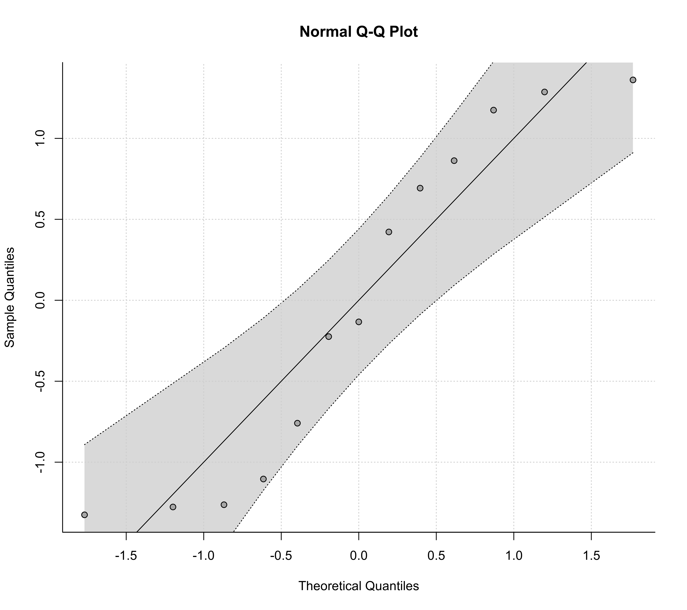
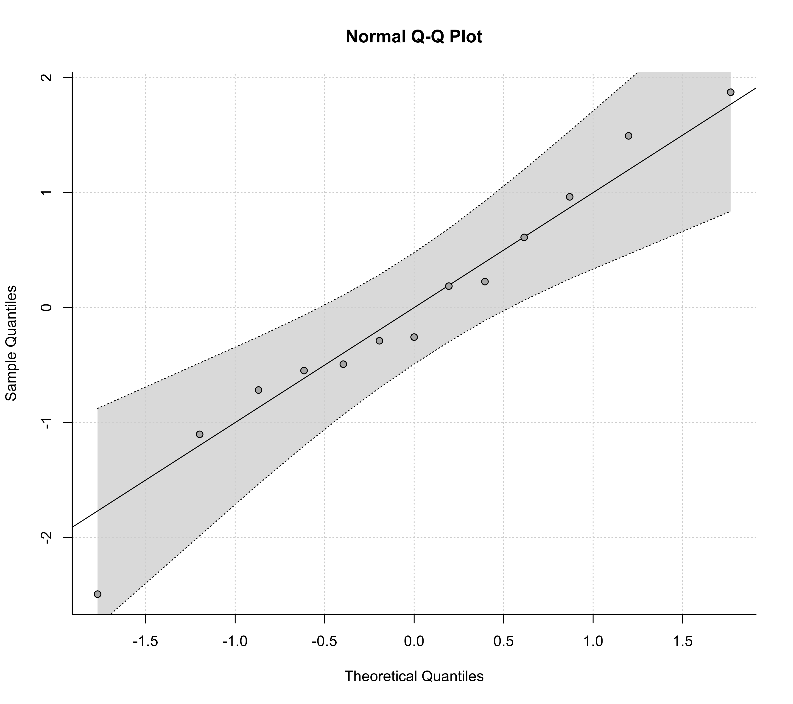

qqnorm.rma.RdFunction to create normal QQ plots for objects of class "rma.uni", "rma.mh", and "rma.peto".
# S3 method for rma.uni qqnorm(y, type="rstandard", pch=19, envelope=TRUE, level=y$level, bonferroni=FALSE, reps=1000, smooth=TRUE, bass=0, label=FALSE, offset=0.3, pos=13, lty, ...) # S3 method for rma.mh qqnorm(y, type="rstandard", pch=19, label=FALSE, offset=0.3, pos=13, ...) # S3 method for rma.peto qqnorm(y, type="rstandard", pch=19, label=FALSE, offset=0.3, pos=13, ...) # S3 method for rma.glmm qqnorm(y, ...) # S3 method for rma.mv qqnorm(y, ...)
| y | an object of class |
|---|---|
| type | character string (either |
| pch | plotting symbol to use for the observed outcomes. By default, a filled circle is used. See |
| envelope | logical to specify whether a pseudo confidence envelope should be simulated and added to the plot (the default is |
| level | numeric value between 0 and 100 to specify the level of the pseudo confidence envelope (the default is to take the value from the object). |
| bonferroni | logical to specify whether the bounds of the envelope should be Bonferroni corrected. |
| reps | numeric value to specify the number of iterations to use for simulating the pseudo confidence envelope (the default is 1000). |
| smooth | logical to specify whether the results from the simulation should be smoothed (the default is |
| bass | numeric value that controls the degree of smoothing (the default is 0). |
| label | argument to control the labeling of the points (the default is |
| offset | argument to control the distance between the points and the corresponding labels. |
| pos | argument to control the position of the labels. |
| lty | optional character string to specify the line type for the diagonal line and the pseudo confidence envelope. If unspecified, the function sets this to |
| ... | other arguments. |
The plot shows the theoretical quantiles of a normal distribution on the horizontal axis against the observed quantiles for either the standardized residuals (type="rstandard", the default) or the externally standardized residuals (type="rstudent") on the vertical axis (see residuals.rma for details on the definition of these residual types).
For reference, a line is added to the plot with slope of 1, going through the (0,0) point.
For objects of class "rma.uni", it is also possible to add a pseudo confidence envelope to the plot. The envelope is created based on the quantiles of sets of pseudo residuals simulated from the given model (for details, see Cook & Weisberg, 1982). The number of sets simulated can be controlled with the reps argument. When smooth=TRUE, the simulated bounds are smoothed with Friedman's SuperSmoother (see supsmu). The bass argument can be set to a number between 0 and 10, with higher numbers indicating increasing smoothness. If bonferroni=TRUE, the envelope bounds are Bonferroni corrected, so that the envelope can be regarded as a confidence region for all \(k\) residuals simultaneously. The default however is bonferroni=FALSE, which makes the plot more sensitive to deviations from normality.
With the label argument, one can control whether points in the plot will be labeled (e.g., to identify outliers). If label="all" (or label=TRUE), all points in the plot will be labeled. If label="out", points falling outside of the confidence envelope will be labeled (only available for objects of class "rma.uni"). Finally, one can also set this argument to a numeric value (between 1 and \(k\)), indicating how many of the most extreme points should be labeled (for example, with label=1 only the most extreme point would be labeled, while with label=3, the most extreme, and the second and third most extreme points would be labeled). With the offset argument, one can adjust the distance between the labels and the corresponding points. The pos argument is the position specifier for the labels (1, 2, 3, and 4, respectively indicate positions below, to the left of, above, and to the right of the points; 13 places the labels below the points for points that fall below the reference line and above otherwise; 24 places the labels to the left of the points for points that fall above the reference line and to the right otherwise).
A list with components:
the x-axis coordinates of the points that were plotted.
the y-axis coordinates of the points that were plotted.
Wolfgang Viechtbauer wvb@metafor-project.org https://www.metafor-project.org
Cook, R. D., & Weisberg, S. (1982). Residuals and influence in regression. London: Chapman and Hall.
Viechtbauer, W. (2010). Conducting meta-analyses in R with the metafor package. Journal of Statistical Software, 36(3), 1--48. https://doi.org/10.18637/jss.v036.i03
Wang, M. C., & Bushman, B. J. (1998). Using the normal quantile plot to explore meta-analytic data sets. Psychological Methods, 3(1), 46--54. https://doi.org/10.1037/1082-989X.3.1.46
### calculate log risk ratios and corresponding sampling variances dat <- escalc(measure="RR", ai=tpos, bi=tneg, ci=cpos, di=cneg, data=dat.bcg) ### fit random-effects model res <- rma(yi, vi, data=dat) ### draw QQ plot qqnorm(res)### fit mixed-effects model with absolute latitude as moderator res <- rma(yi, vi, mods = ~ ablat, data=dat) ### draw QQ plot qqnorm(res)